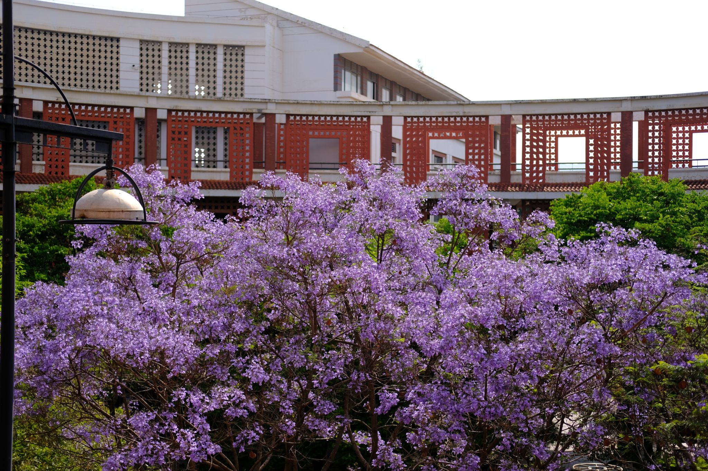
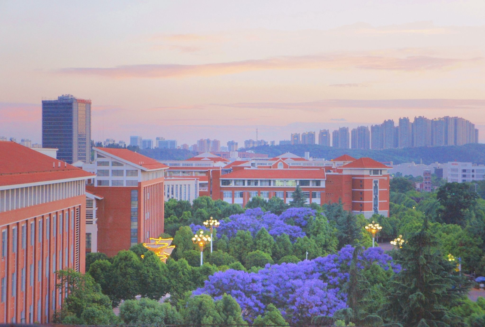

你好，我是 王晨钊
AI 应用开发工程师 / 算法工程师
一名对人工智能技术充满热情的开发者，具备从数据采集、特征工程、模型训练到部署落地的完整 AI 项目实践经验。善于用算法思维解决实际问题，期待在 AI 应用开发方向持续深耕。
专业技能
核心算法与模型
机器学习基础
协同过滤
TF-IDF
K-Means 聚类
NLP 情感分析
机器学习基础
协同过滤
TF-IDF
K-Means 聚类
NLP 情感分析
开发语言与框架
Python
Scikit-learn
Pandas
Flask
JavaScript
微信小程序云开发
Python
Scikit-learn
Pandas
Flask
JavaScript
微信小程序云开发
工具与工程化
爬虫 (Requests, BeautifulSoup)
GitHub Actions
Matplotlib
微信支付 API
爬虫 (Requests, BeautifulSoup)
GitHub Actions
Matplotlib
微信支付 API
实习与项目经历
Vibe Coding 简历
AI 漫剧动画师
扫码点餐系统
豆瓣电影 NLP 分析
智能天气推荐助手
2026.07 - 至今
Vibe Coding 个人简历网站 (独立开发)
HTML5 · CSS3 (Glassmorphism) · 原生 JavaScript · Canvas 粒子特效
- 全程采用 Vibe Coding 模式独立开发，从零到一极速构建极具现代科技感的个人专属交互式 Web 简历。
- 深度运用 CSS3 变量、毛玻璃滤镜与 3D 透视转换技术，无框架纯手写实现“期权轮”、“无缝轮播手风琴”等高难度炫酷 UI 交互。
- 自研基于原生 Canvas 的物理粒子系统，实现像素级文字解构生成、平滑摩擦力算法及动态鼠标视差追踪的满屏视觉盛宴。
2026.03 - 2026.07
AI 漫剧动画师 / 抽卡师 (实习)
Midjourney · Stable Diffusion · 提示词工程 (Prompt) · 视频剪辑
- 深入应用 Midjourney 与 Stable Diffusion 等 AI 图像生成工具，通过精调提示词 (Prompt) 高效产出高质量漫画分镜与人物插图。
- 参与 AI 漫剧的角色设计与场景构建，训练与微调专属 LoRA 模型，确保不同分镜下角色形象的连贯性与一致性。
- 结合后期剪辑与特效工具，将 AI 生成的静态图片转化为生动的动态漫剧，大幅提升团队的内容生产效率。
2025.04 - 2026.02
微信小程序扫码点餐与排队预定系统
Java (SSM) · 微信小程序 · MySQL · 协同过滤
- 独立完成后端 (基于 SSM 框架) 与前端 (微信小程序) 的全栈开发，实现扫码排队、在线点餐、座位预约等核心业务功能。
- 基于用户点餐历史数据，设计协同过滤推荐算法，实现菜品的个性化推荐，有效提升用户的点餐效率。
- 成功对接微信支付 API，完成订单生成、支付状态回调等闭环逻辑，保障系统订单流转安全稳定。
2024.03 - 2024.08
豆瓣电影智能分析 —— 基于 NLP 的影评情感挖掘
Python · Scikit-learn · Pandas · Jieba · SnowNLP
- 设计反爬策略实现豆瓣 Top250 电影元数据及影评的高效采集，累计获取 1 万+条评论数据。
- 利用 TF-IDF 提取影评关键词，结合电影评分进行关联分析，挖掘影响评分的核心因素。
- 将分析结果可视化，生成电影推荐报告与情感趋势图。
- 项目成果：构建了完整的 NLP 分析 Pipeline，为后续电影推荐系统研究提供了高质量的数据基础。
2023.03 - 2023.08
智能天气推荐助手 —— 基于用户行为的个性化推送
Python · Scikit-learn · Flask · GitHub Actions
- 采集用户历史天气查询行为及互动数据，构建用户画像特征（地理位置、关注指标、活跃时段）。
- 利用 K-Means 聚类算法对用户进行分群，识别高活跃用户、通勤用户、敏感天气用户等群体。
- 使用 Flask 搭建简易推送服务，通过 GitHub Actions 实现每日自动化执行。
- 项目成果：服务稳定运行超过一年，积累了完整的用户画像构建与个性化推荐系统开发经验。
教育背景
云南民族大学
2024.09 - 2026.06信息管理与信息系统（本科）
主修课程：计算机网络与安全、管理信息系统、电子商务与网络营销、管理学原理、机器学习、大数据技术、数据结构与数据库、Hadoop 集群搭建。

